◆「迦勒底男性精選2021Pick Up召喚(每日交替)」期間◆
期間:2021年3月3日(三) 17:00～3月17日(三) 11:59
舉辦期間限定「迦勒底男性精選2021Pick Up召喚(每日交替)」！
舉辦只限男性從者做為對象的「迦勒底男性精選2021Pick Up1召喚(每日交替)」「迦勒底男性精選2021Pick Up2召喚(每日交替)」2種召喚。 ※期間限定活動「聖杯怪盗天草四郎 ～鬧劇博物館～」中活躍的「★3(R)荊軻」也會被抽出。
「迦勒底男性精選2021Pick Up1召喚(每日交替)」及「迦勒底男性精選2021Pick Up2召喚(每日交替)」中，從期間限定活動「聖杯怪盗天草四郎 ～鬧劇博物館～」關聯從者之中，包含1位期間限定從者的下述從者Pick Up！ ※請注意「迦勒底男性精選2021Pick Up1召喚(每日交替)」與「迦勒底男性精選2021Pick Up2召喚(每日交替)」的獎勵召喚計算，是各自分別計算的。 ※請注意「迦勒底男性精選2021Pick Up1召喚(每日交替)」與「迦勒底男性精選2021Pick Up2召喚(每日交替)」舉辦期間不同。
| 「迦勒底男性精選2021Pick Up1召喚(每日交替)」舉辦期間 |
|---|
▼期間限定從者
【常駐Pick Up】
・★5(SSR)天草四郎
▼Pick Up從者
【每日交替Pick Up】
・★5(SSR)狄奧斯庫洛伊
・★5(SSR)拿破崙
・★5(SSR)尼古拉・特斯拉
・★5(SSR)迦爾納(Lancer)
・★5(SSR)阿基里斯
・★5(SSR)尼莫
・★5(SSR)李書文(Assassin)
・★5(SSR)弗拉德三世(Berserker)
【常駐Pick Up】 ・★4(SR)渡邊綱 ・★3(R)荊軻
| 「迦勒底男性精選2021Pick Up2召喚(每日交替)」舉辦期間 |
|---|
▼期間限定從者
【常駐Pick Up】
・★5(SSR)天草四郎
▼Pick Up從者
【每日交替Pick Up】
・★5(SSR)阿周那
・★5(SSR)恩奇杜
・★5(SSR)奧茲曼迪亞斯
・★5(SSR)奧德修斯
・★5(SSR)諸葛孔明〔艾梅洛Ⅱ世〕
・★5(SSR)庫・夫林〔Alter〕
・★5(SSR)項羽
【常駐Pick Up】 ・★4(SR)渡邊綱 ・★3(R)荊軻
另外，下述的期間限定概念禮裝常駐Pick Up！
【常駐Pick Up】
・★5(SSR)フラワー・アンド・カフェ
・★5(SSR)クラブ・アルゴノーツ
・★4(SR)探偵ヱドモン～蘇る悪夢編～
・★4(SR)ラウンズ・オン・アイス
・★4(SR)百鬼夜行
・★3(R)カルデア・イレブン
・★3(R)至高の学び舎
・★3(R)スプレッド・ガン
・★3(R)∞ドリーム
裝備上述9種概念禮裝的話，期間限定活動「聖杯怪盗天草四郎 ～鬧劇博物館～」中會提升活動道具的掉落獲得數。
Pick Up期間中，Pick Up對象從者與概念禮裝的出現機率提升！
詳情請在聖晶石召喚畫面左下的召喚詳細確認。
11次召喚中確定1張★4(SR)以上和確定1位★3(R)以上的從者！ ※確定★4(SR)以上包含從者和概念禮裝。 ※本頁面皆為開發中圖片。會有與實際圖片相異的情況。
◆有關從者的注意◆
※除了性別「男性」的從者外，下述的從者也包含在抽出對象。
・★5(SSR)狄奧斯庫洛伊
・★5(SSR)俄里翁
・★5(SSR)恩奇杜
・★4(SR)夏爾・德翁
・★4(SR)阿斯托爾福(Rider)
・★3(R)荊軻
※請注意本召喚做為每日交替，下述的從者就算舉辦期間中也有不會被抽出來的日子。
・★5(SSR)尼古拉・特斯拉
・★5(SSR)李書文(Assassin)
・★5(SSR)庫・夫林〔Alter〕
※下述的從者在Pick Up期間結束後不會追加到故事召喚。
・★5(SSR)天草四郎
※本召喚的Pick Up期間中，透過故事進行所追加的下述從者就算通過各章前也能入手。
・★5(SSR)尼古拉・特斯拉
・★5(SSR)李書文(Assassin)
・★5(SSR)庫・夫林〔Alter〕
※下述的從者在Pick Up期間結束後仍會在故事召喚被抽出。
・每日交替Pick Up對象★5(SSR)男性從者
・★5(SSR)狄奧斯庫洛伊
・★5(SSR)恩奇杜
・★4(SR)渡邊綱
・★3(R)荊軻
◆有關概念禮裝的注意◆
※下述的概念禮裝，Pick Up期間中也能靠友情點數召喚獲得。
・★3(R)カルデア・イレブン
・★3(R)至高の学び舎
・★3(R)スプレッド・ガン
・★3(R)∞ドリーム
※在自動變還設定登錄★3(R)概念禮裝的情況，下述的概念禮裝會變成自動變還的對象。
・★3(R)カルデア・イレブン
・★3(R)至高の学び舎
・★3(R)スプレッド・ガン
・★3(R)∞ドリーム
◆「迦勒底男性精選2021Pick Up召喚(每日交替)」Pick Up內容◆
| Pick Up期間 | ||||
|---|---|---|---|---|
| Pick Up內容 | ||||
| 全天Pick Up | 每日交替Pick Up | |||
|
3/3(三) 17:00～ 3/5(五) 22:59 |
★5 天草四郎 ★4 渡邊綱 ★3 荊軻 | - | ||
| 3/5(五) 23:00～3/6(六) 22:59 | ★5 狄奧斯庫洛伊 | |||
| 3/6(六) 23:00～3/7(日) 22:59 | ★5 拿破崙 | |||
| 3/7(日) 23:00～3/8(一) 22:59 | ★5 弗拉德三世(Berserker) | |||
| 3/8(一) 23:00～3/9(二) 22:59 |

|
★5 尼莫 | ||
| 3/9(二) 23:00～3/10(三) 22:59 | ★5 迦爾納(Lancer) | |||
| 3/10(三) 23:00～3/11(四) 22:59 |

|
★5 尼古拉・特斯拉 | ||
| 3/11(四) 23:00～3/12(五) 22:59 | ★5 阿基里斯 | |||
| 3/12(五) 23:00～3/13(六) 22:59 | ★5 李書文(Assassin) | |||
|
3/13(六) 23:00～ 3/17(三) 11:59 |
- | |||
※請注意會以每日交替變更Pick Up的從者。
| Pick Up期間 | ||||
|---|---|---|---|---|
| Pick Up內容 | ||||
| 全天Pick Up | 每日交替Pick Up | |||
| 3/5(五) 23:00～3/6(六) 22:59 | ★5 天草四郎 ★4 渡邊綱 ★3 荊軻 | ★5 項羽 | ||
| 3/6(六) 23:00～3/7(日) 22:59 | ★5 奧德修斯 | |||
| 3/7(日) 23:00～3/8(一) 22:59 | ★5 諸葛孔明〔艾梅洛Ⅱ世〕 | |||
| 3/8(一) 23:00～3/9(二) 22:59 | ★5 阿周那 | |||
| 3/9(二) 23:00～3/10(三) 22:59 | ★5 奧茲曼迪亞斯 | |||
| 3/10(三) 23:00～3/11(四) 22:59 | ★5 恩奇杜 | |||
| 3/11(四) 23:00～3/12(五) 22:59 | ★5 庫・夫林〔Alter〕 | |||
※請注意會以每日交替變更Pick Up的從者。

|
★★★★★SSR |
| 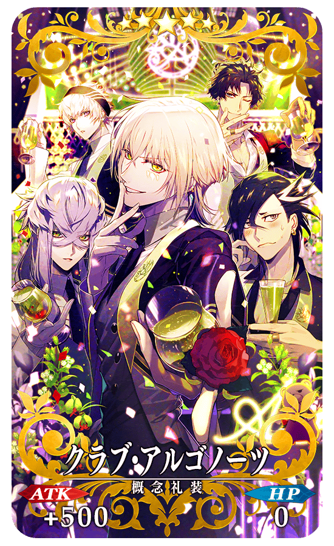 |
★★★★★SSR |
| 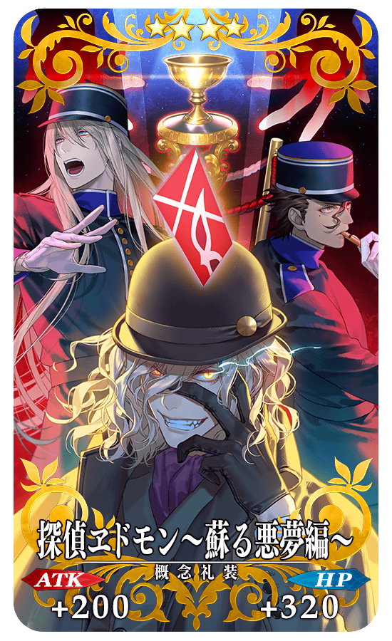 |
★★★★SR |
| 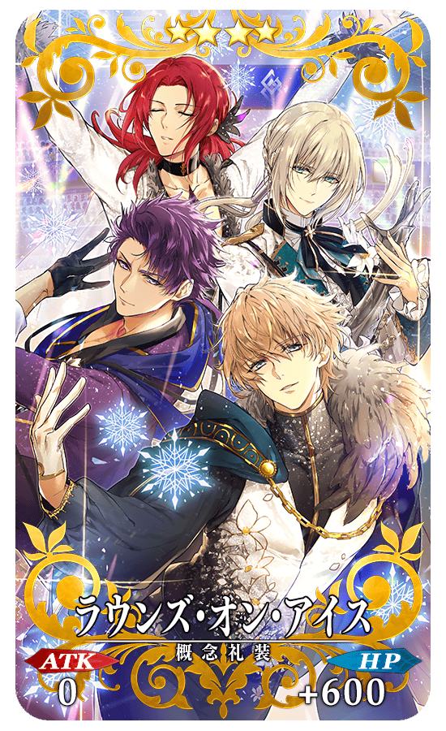 |
★★★★SR |
| 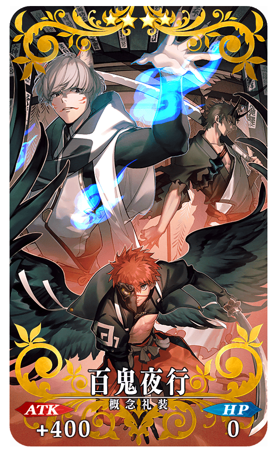 |
★★★★SR |
| 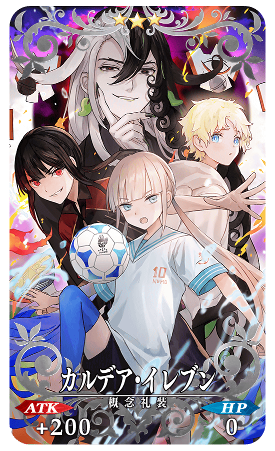 |
★★★R |
| 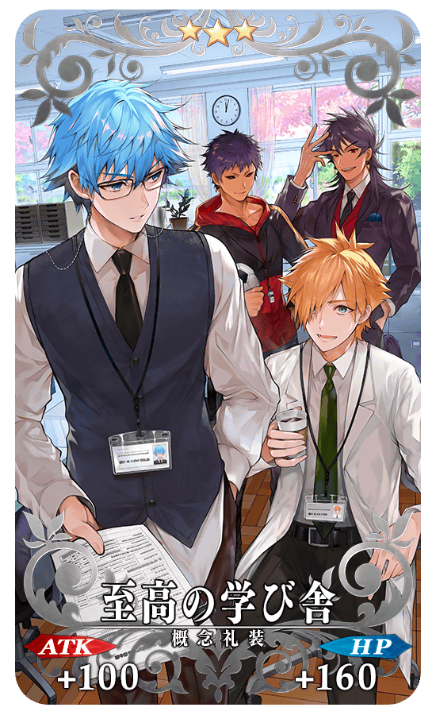 |
★★★R |
| 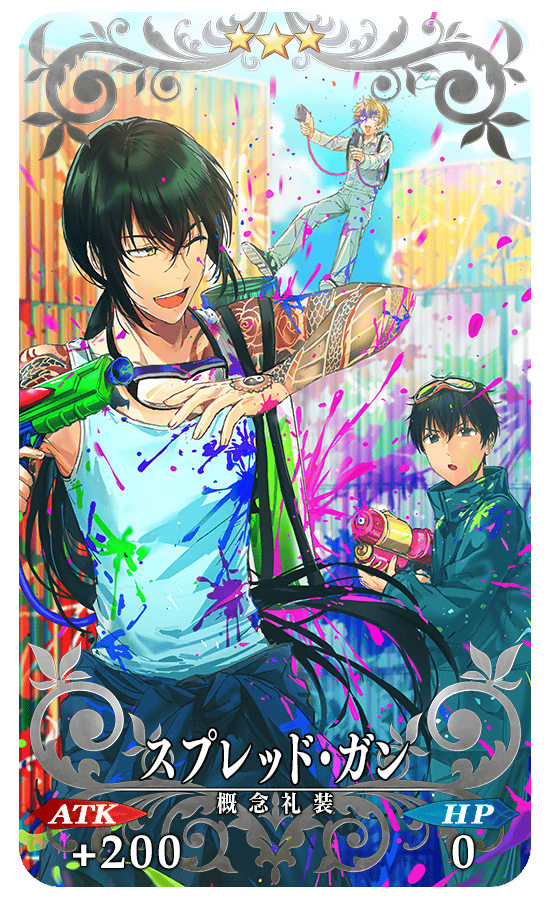 |
★★★R |
| 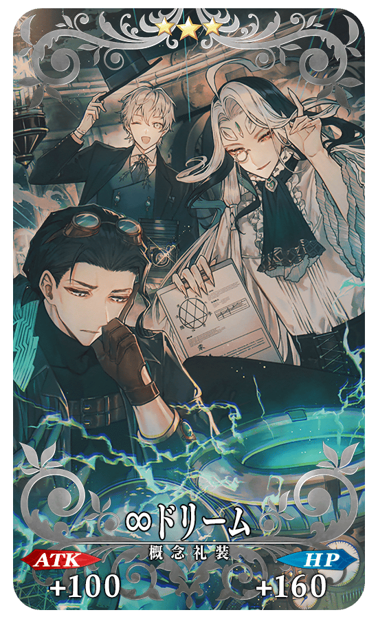 |
★★★R |
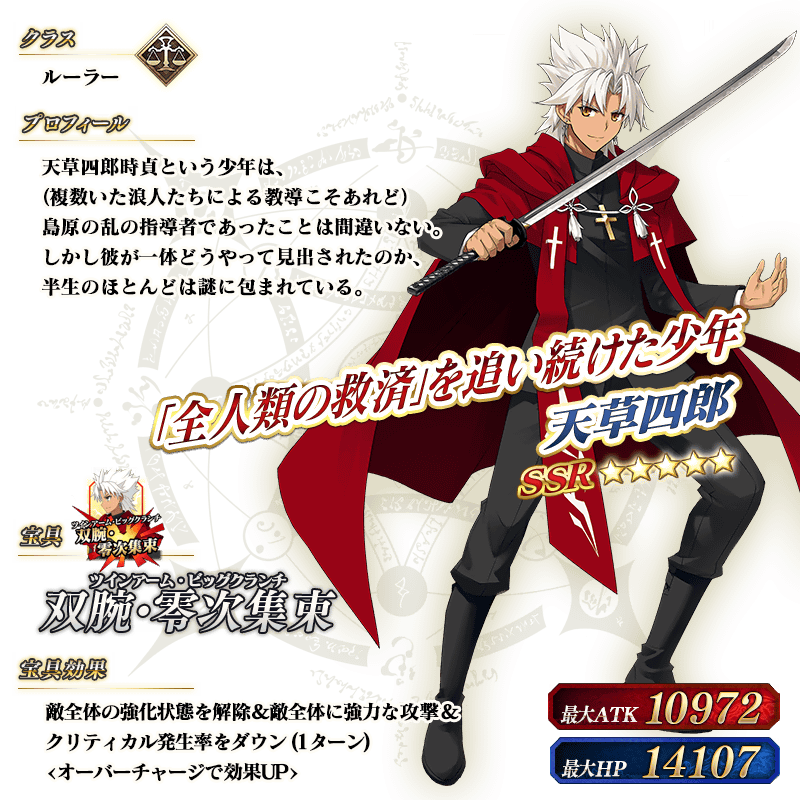 ※上述「★5(SSR)天草四郎」的立繪為靈基再臨第1階段。
「★5(SSR)天草四郎」的靈衣開放權做為期間限定活動「聖杯怪盗天草四郎 ～鬧劇博物館～」的報酬登場！
可在本活動的活動道具交換入手上述靈衣開放權。
另外，想要靈衣開放的話，除了靈衣開放權外必須再加上一些開放條件。
◆有關靈衣開放權的注意◆
※「★5(SSR)天草四郎」的靈衣開放權只限期間限定活動「聖杯怪盗天草四郎 ～鬧劇博物館～」的活動道具交換期間才能入手。
※「★5(SSR)天草四郎」的靈衣會配合外觀變化一部份語音。
※請注意未持有「★5(SSR)天草四郎」的情況，可入手靈衣開放權。但無法進行靈衣開放。


「靈衣開放」是自強化畫面進行。
※「靈衣開放」後會自動切換戰鬥角色和圖示。若想回到「靈衣開放」前的狀態和變成其他再臨階段的情況，可自從者詳細畫面變更。 ※進行「靈衣開放」不會讓職階和能力等有所變化。
介紹開放靈衣「怪盗天草四郎」的「★5(SSR)天草四郎」寶具演出！
在「Fate/Grand Order」官方網站內的公告中，以影片公開寶具演出，敬請確認。
「★5(SSR)天草四郎」的戰鬥動作及寶具演出翻新！
另外，伴隨對一部份裝置全螢幕顯示的對應，寶具演出也對應到全螢幕顯示。
在「Fate/Grand Order」官方網站內的公告中，以影片公開寶具演出，敬請確認。
◆翻新實施時間◆
2021年3月3日(三) 17:00～

 ※上述「★5(SSR)狄奧斯庫洛伊」的立繪為靈基再臨第1階段。
※上述「★5(SSR)狄奧斯庫洛伊」的立繪為靈基再臨第1階段。

 ※上述「★5(SSR)尼古拉・特斯拉」的立繪為靈基再臨第1階段。
※上述「★5(SSR)尼古拉・特斯拉」的立繪為靈基再臨第1階段。
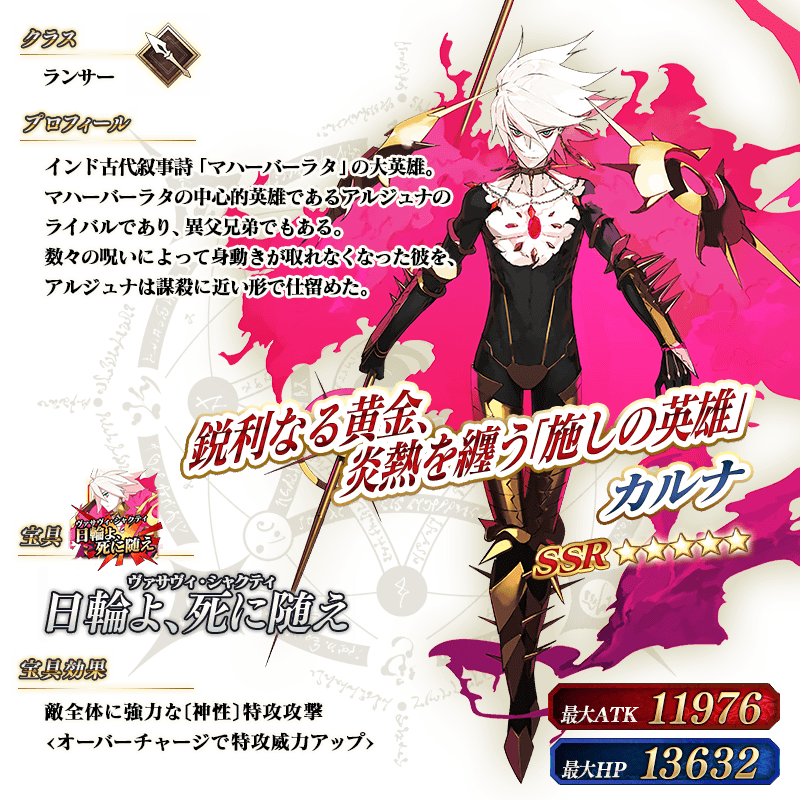 ※上述「★5(SSR)迦爾納(Lancer)」的立繪為靈基再臨第1階段。

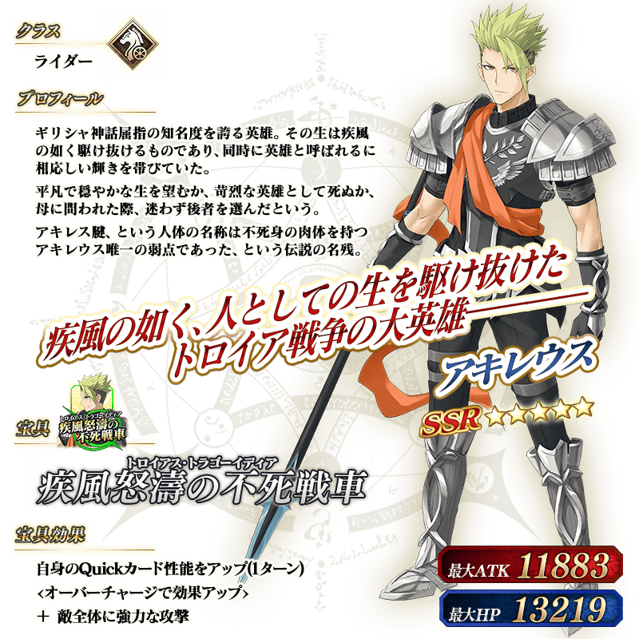 ※上述「★5(SSR)阿基里斯」的立繪為靈基再臨第1階段。
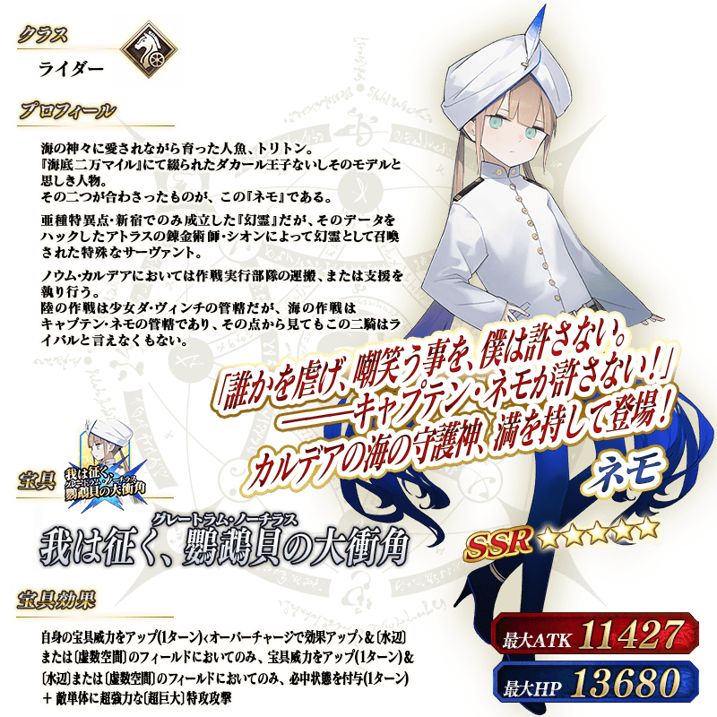
 ※上述「★5(SSR)李書文(Assassin)」的立繪為靈基再臨第1階段。
※上述「★5(SSR)李書文(Assassin)」的立繪為靈基再臨第1階段。
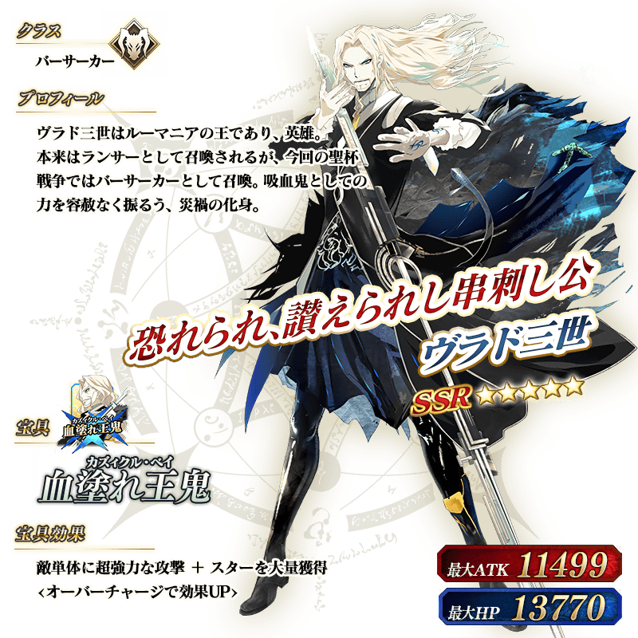 ※上述「★5(SSR)弗拉德三世(Berserker)」的立繪為靈基再臨第1階段。
 ※上述「★5(SSR)阿周那」的立繪為靈基再臨第1階段。
※上述「★5(SSR)阿周那」的立繪為靈基再臨第1階段。
 ※上述「★5(SSR)恩奇杜」的立繪為靈基再臨第1階段。
※上述「★5(SSR)恩奇杜」的立繪為靈基再臨第1階段。
 ※上述「★5(SSR)奧茲曼迪亞斯」的立繪為靈基再臨第1階段。
※上述「★5(SSR)奧茲曼迪亞斯」的立繪為靈基再臨第1階段。

※上述「★5(SSR)奧德修斯」的立繪為靈基再臨第1階段。


※上述「★5(SSR)庫・夫林〔Alter〕」的立繪為靈基再臨第1階段。

※上述「★5(SSR)項羽」的立繪為靈基再臨第1階段。
介紹在本召喚Pick Up的8位從者寶具演出！
在「Fate/Grand Order」官方網站內的公告中，以影片公開寶具演出，敬請確認。
【★5(SSR)狄奧斯庫洛伊】
【★5(SSR)拿破崙】
【★5(SSR)尼古拉・特斯拉】
【★5(SSR)迦爾納(Lancer)】
【★5(SSR)阿基里斯】
【★5(SSR)尼莫】
【★5(SSR)李書文(Assassin)】
【★5(SSR)弗拉德三世(Berserker)】
介紹在本召喚Pick Up的7位從者寶具演出！
在「Fate/Grand Order」官方網站內的公告中，以影片公開寶具演出，敬請確認。
【★5(SSR)阿周那】
【★5(SSR)恩奇杜】
【★5(SSR)奧茲曼迪亞斯】
【★5(SSR)奧德修斯】
【★5(SSR)諸葛孔明〔艾梅洛Ⅱ世〕】
【★5(SSR)庫・夫林〔Alter〕】
【★5(SSR)項羽】
強化本召喚中Pick Up的「★5(SSR)天草四郎」「★3(R)荊軻」的特別關卡「從者強化關卡」，在迦勒底之門永久追加。
不僅進行對象從者的強化，也可獲得聖晶石做為關卡通過報酬。
※請注意在從者強化關卡沒有文字冒險部份。
◆追加時間◆
2021年3月3日(三) 17:00～
◆開放條件◆
持有的強化對象從者，必須使其最終再臨。
※未持有對象從者的話，不會出現關卡。
※關卡沒有舉辦期限。


【3月10日(三) 17:00追記】
其他還有，
・迦勒底男性精選2021
・聖杯怪盗天草四郎 ～鬧劇博物館～
・迦勒底男性精選2021Pick Up3召喚
以期間限定舉辦中！
關於詳情，請自下述橫幅確認。
■「迦勒底男性精選2021」詳細情報

■「聖杯怪盗天草四郎 ～鬧劇博物館～」詳細情報

■「迦勒底男性精選2021Pick Up召喚3」詳細情報